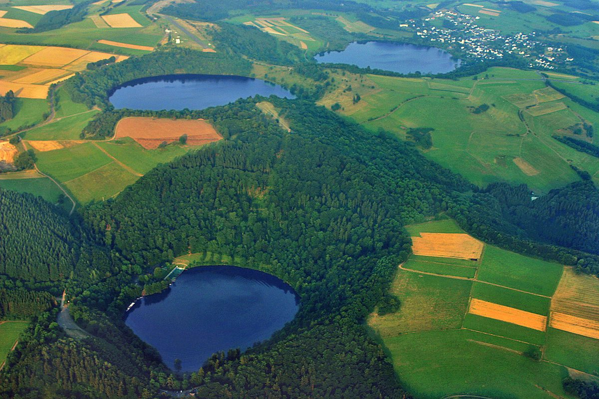

Discover the Eifel Maare: Germany’s Natural Volcanic Wonders

The Eifel Maare, located in the scenic Eifel region of Germany, are a series of stunning volcanic crater lakes formed thousands of years ago. These natural wonders are surrounded by lush forests and rolling hills, making them a paradise for nature lovers, hikers, and photographers. Whether you’re seeking tranquility or adventure, the Eifel Maare offer something for everyone.
What Are the Eifel Maare?
The Eifel Maare are volcanic craters filled with water, created by explosive volcanic activity during the Pleistocene epoch. These circular lakes are unique geological formations and are often referred to as the 'eyes of the Eifel' due to their serene beauty. Some of the most famous Maare include the Meerfelder Maar, the Pulvermaar, and the Gemündener Maar.
Best Time to Visit
The Eifel Maare are beautiful year-round, but the best time to visit is during late spring, summer, and early autumn. During these months, the weather is pleasant, making it ideal for hiking, swimming, and exploring the surrounding nature. Winter visits offer a magical, snow-covered landscape, though some activities may be limited.
How to Get There
The Eifel region is easily accessible by car, train, or bus. If you’re driving, the Maare are well-connected by scenic routes, and parking is available near the lakes. Public transport options include regional trains and buses, which connect major towns like Daun and Gerolstein to the Maare. Plan your trip in advance to enjoy a seamless journey.
Top Highlights of the Eifel Maare
1. Pulvermaar: Known as the deepest Maar in the Eifel, Pulvermaar is perfect for swimming and kayaking. Its crystal-clear waters and green surroundings make it a must-visit. 2. Meerfelder Maar: This Maar features a charming village on its shores and offers excellent hiking trails around the lake. 3. Gemündener Maar: Surrounded by dense forests, this Maar is ideal for nature walks and picnics. 4. Volcano Museum Daun: Learn about the region’s volcanic history and how the Maare were formed.
Local Cuisine
The Eifel region offers delicious local specialties that reflect its rich culinary heritage. Don’t miss trying Eifeler Döppekoche, a hearty potato dish, or Wildschweinbraten, roast wild boar often served with red cabbage and dumplings. Pair your meal with a glass of regional wine or a locally brewed beer for an authentic experience.
Tips for Your Visit
Wear sturdy shoes for hiking, as some trails can be rocky or uneven. Bring a swimsuit if you plan to enjoy the lakes during warmer months. Don’t forget your camera to capture the breathtaking views. Lastly, respect nature by following local guidelines and leaving no trace.
Conclusion
The Eifel Maare are a hidden gem in Germany, offering a unique blend of natural beauty, outdoor activities, and cultural experiences. Whether you’re a solo traveler, a couple, or a family, a trip to the Eifel Maare promises unforgettable memories. Pack your bags and get ready to explore these volcanic wonders!
Haiktec
- The Freelancer's Quick Productivity Boost: 7 Simple Steps to Get More Done in Less Time
- Ultimate NRW City Trip Budget Planner & Itinerary Tracker for Women
- Bavarian Alps & Hidden Gems: A Solo Female Traveler's Guide to Safe & Enchanting Adventures
Text mit KI erstellt und automatisch geprueft.